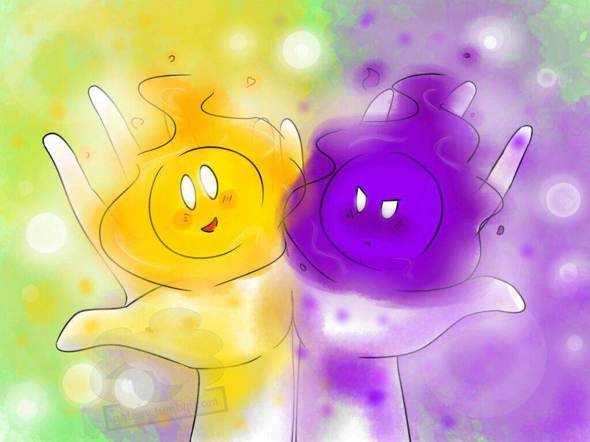
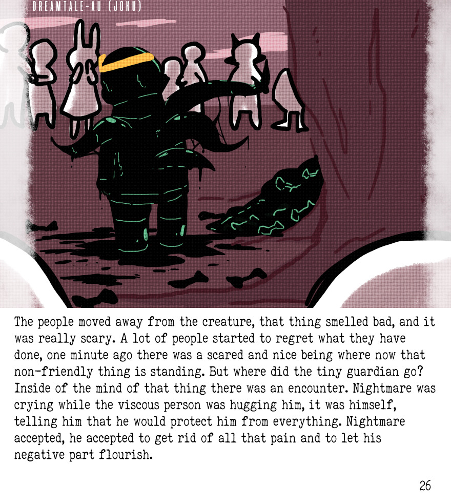
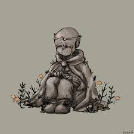

Dreamtale
Hitória
Há muito tempo atrás, foram criadas três árvores sagradas, cada uma com seu respectivo guardião. Uma dessas árvores era a "Árvore dos Sentimentos", ela era dividida em dois lados, em um lado tinha as maçãs douradas, que representavam os sentimentos positivos e o outro lado tinha as maçãs negras, que representavam os sentimentos negativos. Essa árvore distribui os sentimentos para todas as outras AUs, deixando tudo em equilíbrio.

As pessoas que tinham muitos sentimentos negativos queriam pegar umas das maçãs douradas para poderem ser mais felizes, podendo até matar para conseguir seu objetivo. Uma dessas pessoas acabou ferindo gravemente a guardiã da árvore, logo depois ela mata o agressor, mas como já estava perdendo muito sangue, ela cria dois protetores para a árvore, uma luz branca que protegerá os bons sentimentos e uma luz negra que protegerá os sentimentos ruins. A guardiã tenta criar um corpo humano para essas luzes, mas os corpos não aguentaram a quantidade de energia, então ela se baseou em um monstro da AU Underswap, que no caso era o Sans, para criar os corpos, que viraram o Dream!Sans e o Nightmare!Sans. Antes de morrer, a guardiã se funde com a Árvore dos Sentimentos.
Acontecimentos após
Anos se passam, os guardiões viviam em paz, cada guardião era responsável por uma parte da árvore, Dream com o lado das maçãs douradas e Nightmare com o lado das maçãs negras. Nightmare acabava sofrendo por causa do preconceito de cuidar do lado dos sentimentos ruins, mas ele sempre foi cuidadoso e preocupado com seu irmão para ele não se machucar como ele.

Por causa desse preconceito e do ódio, Nightmare queria cuidar da parte dos sentimentos positivos para acabar com essa dor dentro dele, então ele fez algo arriscado, ele pegou uma maçã dourada, mas já como estava cheio de energias negativas, a árvore começou a apodrecer, e as maçãs douradas começaram a virar negras.

Dream ainda tinha uma maçã dourada com ele, a árvore ainda poderia ser curada. Porém, todas as maçãs da árvore tinham sido transformadas em negras, as pessoas da vila estavam furiosas, e tentaram atacar Nightmare por vingança. Após isso, Nightmare comeu as maçãs negras, consequentemente foi transformado em um monstro feito por sentimentos negativos, como ódio e medo. Após isso, ele dizimou a população do local.
Dream absorveu uma maçã dourada para preservar os sentimentos positivos, já que Nightmare destruiu a árvore. Após batalhar com Nightmare, no meio de sua batalha Dream tenta ajudar um dos sobreviventes, Nightmare aproveita que Dream está distraído o ataca, por causa da enorme quantidade de energia negativa em Nightmare Dream se transforma em pedra.
